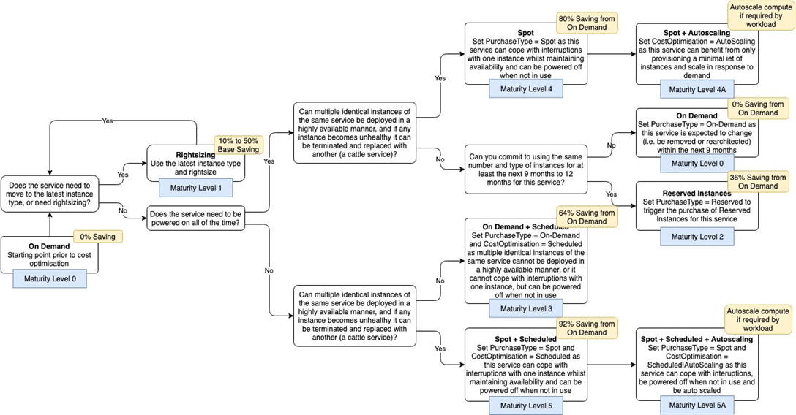

Cost optimisation standards
This content explains:
- the Public Cloud Team’s (PCT) help with cost optimisation
- pillars of cost optimisation
- explanation and how to assess your maturity scale
- how you can achieve various levels of the maturity scale
PCT's help with cost optimisation
Cost optimisation is not a one-time piece of work. It should be a continual process of inspection and implementation. The PCT want to help the Home Office use cloud services efficiently. We want to help your team realise the best savings possible. So, we will be running a regular working group to share best practices, feed in ideas and new explore tooling. If you would like to join these meetings, please contact public.cloud@homeoffice.gov.uk.
More information on PCT Working Groups.
Pillars of optimisation
Right size your instances
Make sure that the instance you provision matches what your needs e.g. CPU, network, storage.
Increase elasticity/Make environments scalable
Optimise environments to meet dynamic needs. Schedule non-prod environments.
Leverage the right pricing model
Utilise on-demand, spot and reserved instances for the right workloads.
Optimise storage
Do not just rely on using EBS and S3 storage types. Identify the most appropriate destination for each type of data.
Measure, monitor and improve
Apply cost optimisation tags. Define metrics, set targets and review regularly.
Cost optimisation maturity scale
The Home Office has produced a cost efficiency model which your project can be scored against.
- Level 0 - On Demand = 0% saving
- Level 1 - Rightsizing = 10% to 50% base instance or storage saving
- Level 2 - Reserved Instances (RI’s) = 36% compute saving
- Level 3 - On Demand (0%) + Scheduling (64%) = 64% compute saving
- Level 3A - With autoscaling in response to workload
- Level 4 - Spot = 80% compute saving
- Level 4A - With autoscaling in response to workload
- Level 5 - Spot (80%) + Scheduling (64%) = 92% compute saving
- Level 5A - With autoscaling in response to workload
How to assess your maturity scale
You can complete a maturity decision tree questionnaire to assess what level your project or service can achieve.
How to achieve different levels
The Home Office has produced a cost efficiency model which your project can be scored against.
Achieving Level 1
Right sizing
AWS Cost Explorer can provide quick and easy recommendations for resizing existing instance types. Steps to get recommendations:
- Log in to the AWS Console and go to the Cost Explorer
- Select the dartboard style icon
- Select resource optimisation recommendations and view all
You can also get cost optimisation recommendations via Trusted Advisor. If your service consistently runs at under 40%, this is a clear indicator that the service is wrongly sized. So, the number of resources assigned to the services needs to be reduced. You can change your instance types via normal deployment routes.
Scaling
You can also reduce the number of instances you provision by architecting your environments for elasticity/scaling. You can find guidance on how to do this on Amazon's EC2 Autoscaling page.
Generally, you should aim to scale ‘horizontally’ with more instances instead of ‘vertically’ with more CPU/RAM per instance. You can also look at re-platforming your instances to use AWS lambda or serverless technology.
Housekeeping
You should use the latest instance types in EC2 & RDS families. You can see the latest instances available on Amazon's EC2 Instance types.
Pick the right storage type for your use case. List of storage is available on Amazon's Cloud Storage. When shutting down instances you need to look out for orphaned snapshots/EBS instances or idle Elastic Load Balances (ELB). Your trusted advisor report will give you a list.
Achieving Level 2
Reserved Instances
AWS Cost Explorer can provide quick and easy recommendations for Reserved Instance (RI) recommendations. Reserved Instances should only be purchased for instances that will be running 24/7.
There are several distinct types of reserved instances. We recommend that you look at purchasing one year all upfront instances. If you wish to purchase RI’s please email public.cloud@homeoffice.gov.uk as we need treasury approval to process upfront payments.
Achieving Level 3
Scheduling
You can reduce instance costs by up to 64% by only running them during business hours. Additionally, you can scale your containers or instances based upon expected usage and set different limits outside of business hours. All development instances should be able to be scheduled and turned off outside of 9-5/7-7.
Achieving Level 4
Spot Instances
You can use EC2 Spot instances to save up to 80% of instance costs by bidding against unused EC2 capacity. However, when you use a spot instance, Amazon can claim the capacity back with 2 minutes notice. Your architecture needs to be immutable and highly available to deal with this. You can also configure Kubernetes nodes to use spot instances.
Achieving Level 5
Spot and Scheduling
By combining scheduling & spot instances you can saving up to 92% of instance costs vs on demand EC2 costs.
Back to start of navigation treeBack to top